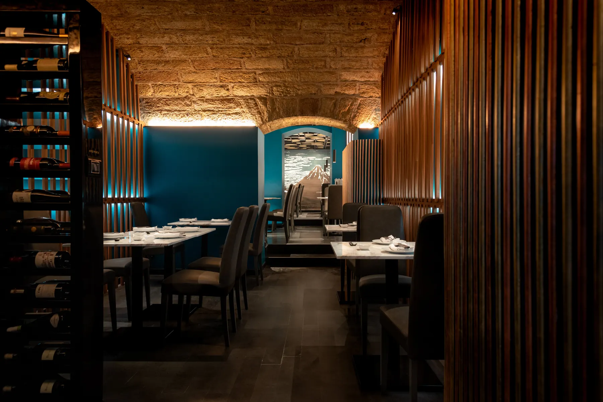

One of the first questions from our US and Japanese clients is: "Is this stone house safe during an earthquake?" The answer depends on the renovation.
Sicily is a seismic zone. Historic buildings (Bagli, Rustici) made of stone and tuff are beautiful, but they need structural help to be safe by modern standards.
How we retrofit without ruining the look
We don't need to cover the beautiful stone with concrete. We use invisible or integrated techniques:
- Steel Tie-Rods (Catene): Steel bars that hold the walls together, preventing them from opening outwards.
- Ring Beams (Cordoli): A reinforced ring at the top of the walls (hidden under the roof) that ties the box together.
- Carbon Fiber: We can reinforce vaults and arches with thin layers of carbon fiber that are invisible after plastering.

These historic arches have been structurally reinforced, yet they look completely original.
Concerned about structure?
Our team includes structural engineers specializing in seismic retrofitting for heritage buildings.
Structural Check